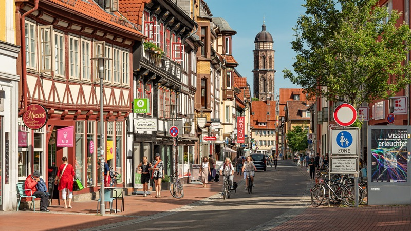

Find Us
Address
Laboratory of Natural and Artificial Intelligence (LNAI)
Institute of Computer Science, University of Göttingen
Goldschmidtstraße 1
37077 Göttingen, Germany
Where is Göttingen?
Göttingen is a cute university city in the heart of Germany, with a beautiful old town and a rich scientific history. It is green, bike-friendly, and very pleasant to live in—while also being well connected by train, with direct connections to Berlin, Hamburg, Munich, Frankfurt, and Hanover.
Scientifically, Göttingen offers an exceptionally dense research environment. Gauss, Hilbert, Heisenberg, Oppenheimer, Schopenhauer, and many others studeid and worked here, and that tradition is still very much alive. Today, in addition to the Georg August University of Göttingen, the city is home to several Max Planck Institutes, the German Primate Center (DPZ), the University Medical Center Göttingen, and a wide range of interdisciplinary research initiatives. Particularly relevant to our work are the Human Cognition and Behavior Center (HuCaB), the Campus Institute Data Science (CIDAS), the RTG 2906 “Curiosity”, and the Lower Saxony Center for AI and Causal Methods in Medicine (CAIMed).
